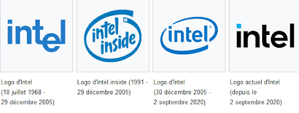

Les 4 entreprises étudié ; Intel.
|  |
|---|
|
Message de la directrice de l’accessibilité ; Intel s'engage en faveur d'une culture de l'accessibilité. Nous encourageons chaque employé à être audacieux et à s'efforcer sans crainte d'aller au-delà de ce qu'il pensait possible. Les personnes en situation de handicap apportent une valeur significative à notre main-d'œuvre et à notre économie. Chez Intel, nous sommes persuadés que pour façonner le futur de la technologie, nous devons être représentatifs de cet avenir. En tant que Directrice de l'Accessibilité, je suis ravie de diriger l'initiative qui vise à promouvoir une culture durable de l'accessibilité en adoptant la technologie pour éliminer les obstacles, favoriser l'innovation et permettre à chacun de libérer pleinement son potentiel. |
Les différents problémes rencontré.
Intel fut plusieurs fois poursuivi pour abus de position dominante, notamment au Japon en 2005 et en Corée du Sud en 2006140 pour être finalement condamnée à une amende d'1,06 milliard d'euros par la Commission européenne en mai 2009141. Le 4 novembre 2009 le ministre de la justice de l'État de New York, Andrew Cuomo, a annoncé qu'il poursuivait le numéro un des micro-processeurs Intel pour pratiques anticoncurrentielles, l'accusant d'exercer des pressions sur les fabricants d'ordinateurs pour que ceux-ci utilisent ses produits. Le procureur général de New York a déposé une plainte contre Intel, l'accusant de « corruption et de coercition pour maintenir sa position sur le marché »142. Le procureur affirme notamment que des fabricants (Dell, HP...) ont reçu des commissions pour ne pas commercialiser de PC utilisant des puces d'AMD, le concurrent d'Intel. Hewlett Packard a par ailleurs subi des pressions lorsqu'il a évoqué l'idée de promouvoir des produits AMD143. Afin d'éviter toute nouvelle attaque, Intel concède à payer à AMD 1,25 milliard de dollars en 2009144 afin que le CO de AMD (Leonardo Travassos) n'engage pas de nouveaux procès antitrust dans le monde.
|
Ici nous pouvons voir un des fondateurs de l’entreprise Intel Andy Groove. |
|---|